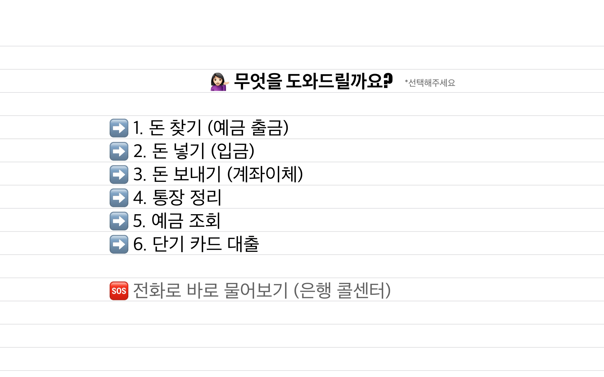

번호를 선택하세요

위 이미지를 확인한 후 아래에서 번호를 선택하세요.
1번
2번
3번
4번
5번
6번
1번 PDF
모바일에서 첫 페이지만 보이면 아래 버튼을 눌러 새 창에서 전체 PDF를 열어보세요.
1번 PDF 전체 열기
2번 PDF
모바일에서 첫 페이지만 보이면 아래 버튼을 눌러 새 창에서 전체 PDF를 열어보세요.
2번 PDF 전체 열기
3번 PDF
모바일에서 첫 페이지만 보이면 아래 버튼을 눌러 새 창에서 전체 PDF를 열어보세요.
3번 PDF 전체 열기
4번 PDF
모바일에서 첫 페이지만 보이면 아래 버튼을 눌러 새 창에서 전체 PDF를 열어보세요.
4번 PDF 전체 열기
5번 PDF
모바일에서 첫 페이지만 보이면 아래 버튼을 눌러 새 창에서 전체 PDF를 열어보세요.
5번 PDF 전체 열기
6번 PDF
모바일에서 첫 페이지만 보이면 아래 버튼을 눌러 새 창에서 전체 PDF를 열어보세요.
6번 PDF 전체 열기